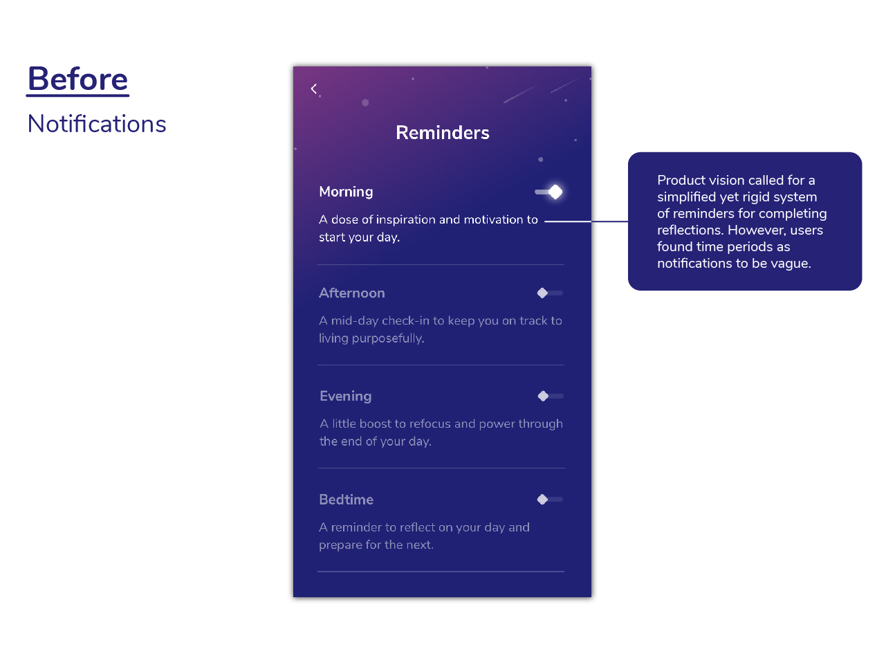

Purposeful
Case Study
A new product meant to guide users towards their purpose in life
At a Glance
The Pursuit
The team behind Purposeful reached out to me with an immediate need: to rapidly research the field of purpose crafting/employee engagement, design and test interfaces, and interview users of the new app in order to ensure that this new product had the best user experience possible.
Services:
- Objectives and Key Results Creation/Curation
- User Interviews
- Secondary Research
- Literature Review
- Competitive Analysis
- Survey Creation/Distribution/Analysis
- User Testing
- Rapid Prototyping
- User Interface Design
- Stakeholder Presentations/Design Defense Presentations
Purposeful's challenge: to deeply understand their users in the midst of a complete product redesign
In April of 2019, the leadership behind Purposeful, a team focused on creating products that increase resiliency and a sense of purpose for employees of large organizations nationwide, reached out to me in order to request that I join the organization as a Product Designer. I had interned at the previous iteration of this company, JOOL Health, a year earlier. While working there I had given a presentation based on a series of field research studies I had conducted that they informed me had influenced the complete rebranding and redesign of their company and flagship product.
Flash forward to 2019 and the Purposeful team was in need more than ever of similar UX research and design efforts. I was glad that they reached out to me and agreed to join them in a Product Design role which I currently occupy in Ann Arbor, Michigan.
First, a little more about Purposeful
Purposeful is a mobile application that helps people find their purpose and be their best self. Offered by large organizations as a part of their health and wellness plans, this app offers guided journaling and advice meant to help users steer themselves toward becoming more purposeful in life. Additionally, as part of Purposeful’s main functionality users are asked each day to set an intention, perform one purposeful action, and reflect on their past day through the lens of how aligned they felt with the purpose that they define through the application.
My goal: provide recommendations and insights from testing and secondary research
Product Design for Purposeful exists within a highly agile, rapidly iterating environment. As a result research/design needs to validate hypotheses quickly in order to bring our users the most effective user experience possible in the shortest amount of time. To achieve a system of processes that enabled these quick design iteration cycles my first action was to create a set of Objectives and Key Results that would foster a sense of a clear path to success within the UX team at Kumanu, and allow us to measure our initial research/design efforts against later initiatives.
After distilling with company leadership the direction in which they wanted to focus their product design efforts, I determined that my role with the company could be divided in the short term into two areas of interest: improving the design of Purposeful’s user experience, and facilitating open communication/collaboration between teams working on Purposeful.
Improving the design of Purposeful's user experience
Purposeful is an app that is brand new in terms of its product lifecycle stage, having just hit MVP weeks before I joined the product team. As a result, leadership was in need of fast and well supported recommendations to make its user experience as good as it could possibly be before it was introduced to the organizations it would soon be deployed within. To push the product towards a high quality UX, I made use of the following methods:
Secondary Research
There exist already a wide range of applications that hit some or many of the different value propositions that define Purposeful, and one of the first things I did while working on this product is that I dove deeply into many of the leading apps occupying the purpose and employee engagement space. While primarily serving as a method by which I could become aware of the state of the digital purpose and engagement industries, secondarily this endeavor served to help validate any recommendations I came to by way of my primary research methods.
Primary Research
Forthcoming features that I was tasked with designing the user experience of generally followed a process of:
- Discover features needed for testing via my own exploration of the app or through collaboration with other teams
- Research and create a test protocol
- Develop a prototype that fits test needs
- Test the features and scenarios
- Analyze the test and make recommendations rooted in test/secondary research findings
As features were constantly rolling out there was a great need for validating design choices in order to ensure that the app materialized as a highly usable product. In order to determine which areas of the app needed attention I kept a close eye on upcoming designs as well as open communication channels across the organization in order to prioritize which soon-to-be-deployed features were ones that needed to be put in front of users.
Once the area of the app to be tested had been determined, it was important for me to consider the tasks that users needed to complete, the scenarios they needed to complete them within, the questions needed to probe their understanding of their experience, and any other themes that needed to be addressed in subsequent user testing. Compiling these elements into a usability testing plan, I would then move on to putting together a prototype that would direct users through the framework I had laid out.
Once testing had been conducted with a satisfactory number of users analysis would be completed. Commonalities, significant usage patterns, and other areas of interest were logged and coded. Combined with secondary research, these findings from the tests as well as the mid-test questions/prompts would form the foundation for recommendations I subsequently made to the company at large.
Design
UI Design
Once stakeholders within the organization were in agreement that recommendations I had made should have a place in the app’s design it would be up to the product team to design their visual and interaction implementation for expedient inclusion into near-term iterations of the application. Design reviews were held often and during said review sessions we justified our rationale for why our recommendations had made their way into the app the way they did. Our process typically came to a close (in the near term, at least) after delivering new designs to the development team via a specification that enabled them to efficiently realize our designs into working code that we could start testing again.
A product designer's role
While my role working on Purposeful consisted largely of researching, prototyping, and testing upcoming and current features of the Purposeful app, I was also integrated into the company in a variety of other ways. Collaborating with company leadership on forthcoming big picture direction changes for the product, communicating the state of the user experience of Purposeful to various teams within the organization on a regular basis (presentations, product team office hours, one-on-one informal chats), and defining and refining the processes by which Purposeful measures its product’s user experience were all within the scope of my role with this organization aimed at growing the purpose of its users.
Moving Forward
If you have any questions regarding my research and design process, feel free to reach out to me and I would be happy to discuss my methods with you! My work on Purposeful is ongoing and as the team behind the Purposeful app arrives at major milestones I will be sure to update this case study.